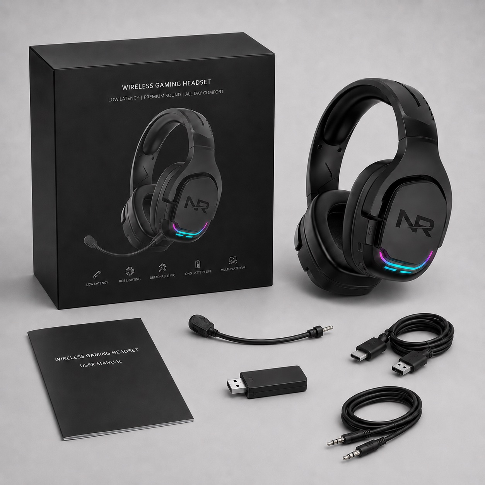
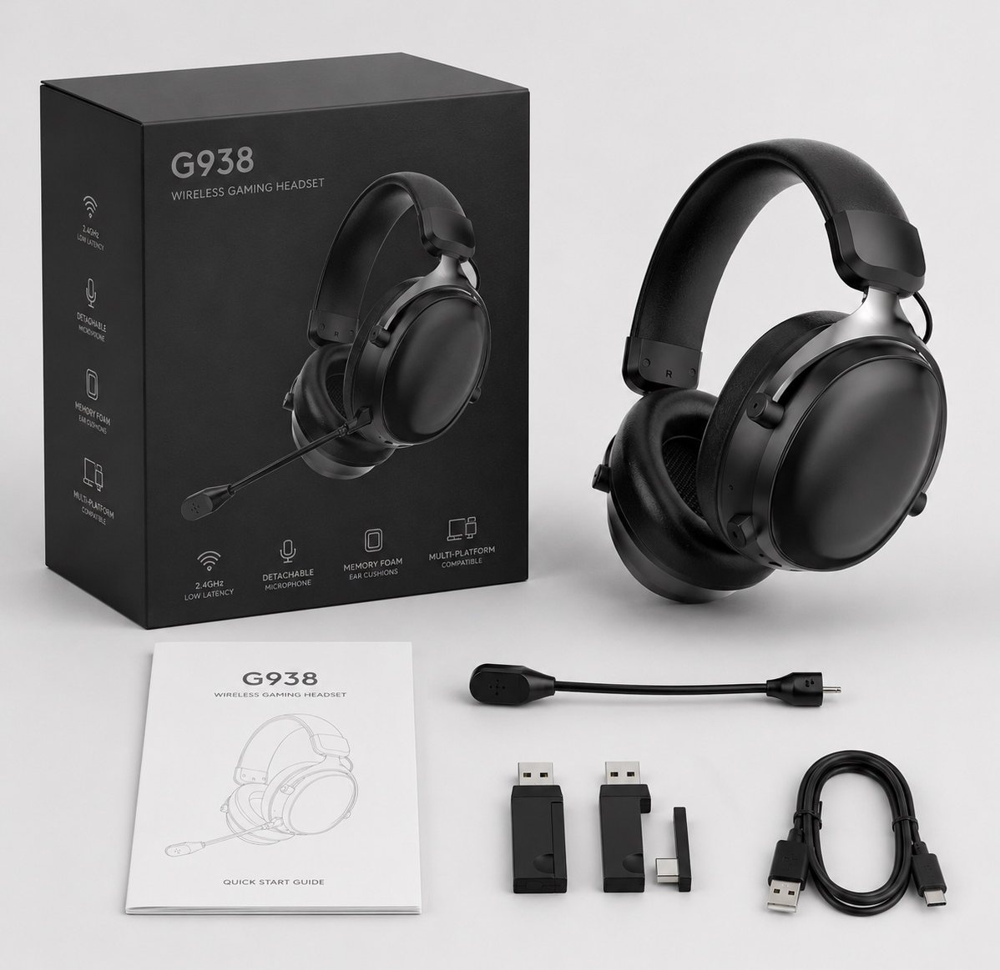
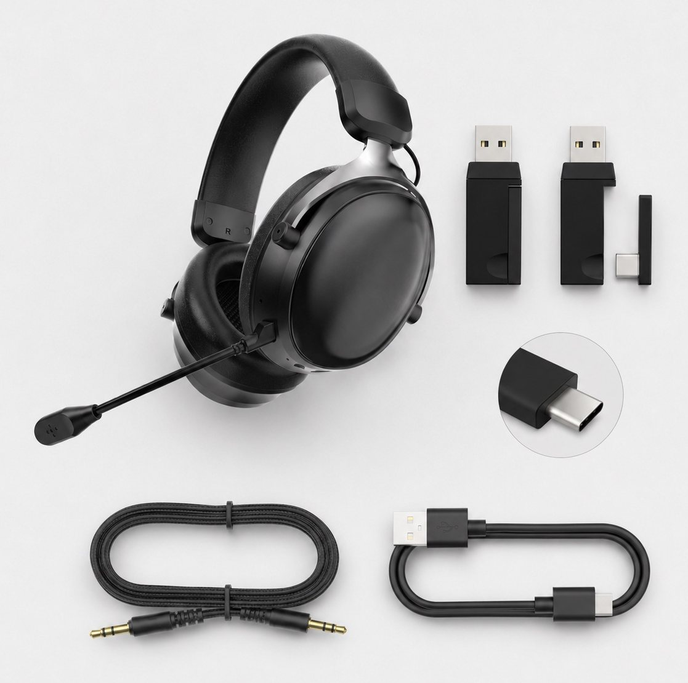
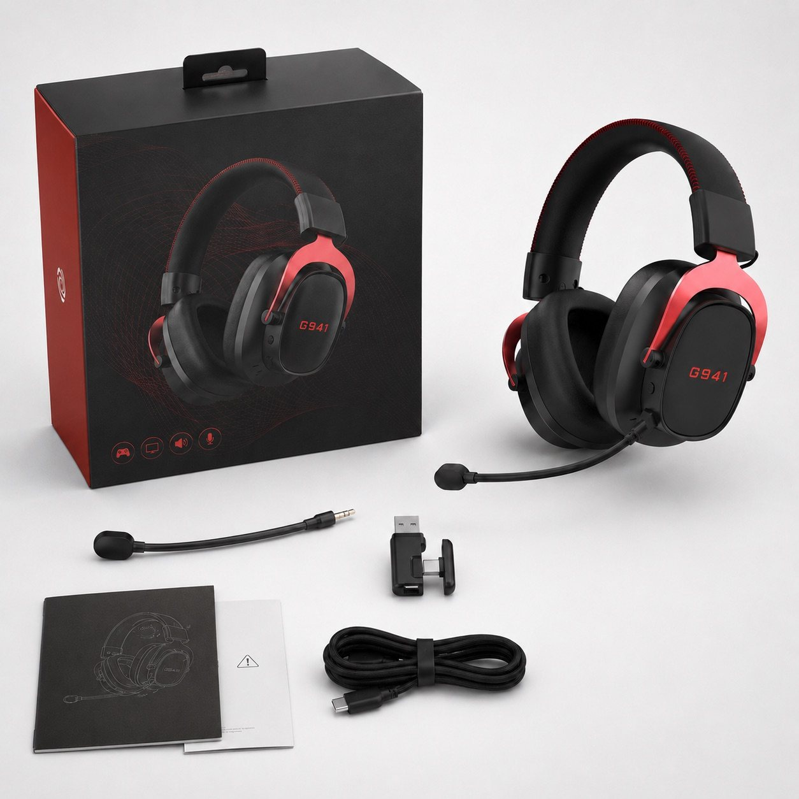
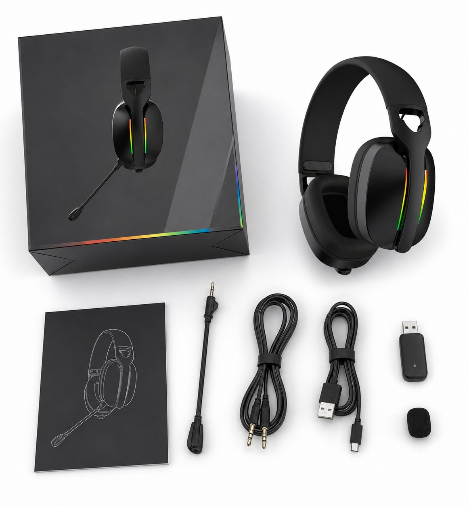

G926 accessory set
Receiver, microphone, cable and printed materials: a reference image, not the agreed packing list for every G926 version.

Packaging and accessories
In the photo does not always mean in the box. Match the headset, receiver, cables and microphone to the packing list for your exact version. Keep optional extras separate.
Then check the box artwork against that list, so customers see what they will actually receive.

Checklist
Mark each item included, optional, not included or not confirmed. Ask for clarification before approving artwork.
| Item | Confirm | Question to resolve |
|---|---|---|
| Model version | Model, color, connection modes and sample ID. | Does it match the quoted version? |
| Receiver | Matching USB receiver, adapter and cover, where applicable. | Which parts are included? |
| Cables | Connector types and charging, playback or microphone functions. | Which cables go in the box? |
| Wired adapters | CTIA headset jack, separate PC jacks and any splitter. | Included or separately priced? Check the connection. |
| Microphone | Fixed or detachable boom and any windscreen. | Packed separately or attached? |
| Printed materials | Guide, warnings, language and document version. | What does the destination market require? |
| Extras | Bag, inserts and other pictured items. | Included, optional or not supplied? |
| Artwork | Logo, model name, product photo and feature wording. | Does every claim match this version? |
| Protection | Box structure, insert fit and accessory placement. | What packing checks are agreed? |
Download the blank sheet without giving your email. Keep it with the sample photos; it is not an approved packing list.
Share the blank sheet with your buying team and cite the TALRIVO headset packing checklist. Confirm each item's status for your order.
Image references
Point to an item, then confirm its status on your packing list. These are supplied reference images, not a promise of standard contents.
Receiver, microphone, cable and printed materials: a reference image, not the agreed packing list for every G926 version.

Identify the cables, microphone and printed materials to confirm.

Match each connector and cable to the required connection mode.

No pouch is shown in this photo. That does not establish the contents of every G941 package. Confirm the agreed packing list and any optional pouch separately.

Check the microphone, receiver, cable and guide against this version's list.
Before approval
Related buyer guides
FAQ
It helps buyers confirm the selected headset version, receiver or cable set, detachable microphone, printed materials, box contents, optional items and packaging layout before bulk-order discussion.
Buyers should check the selected sample version, box structure, product image, accessory list, receiver or cable set, detachable microphone, user guide, manual language and any optional items before approving a packing direction.
No. Optional accessories should not be shown as standard included items unless they are part of the selected sample version and final packing list.
Packaging customization should be discussed after the base model and sample version are confirmed. The approved sample determines the accessory set, logo area, manual language and packaging layout.
Importers usually review the USB receiver, USB-C adapter where applicable, charging cable, audio cable, detachable microphone, windscreen, printed guide and any optional packaging item against the selected sample version.
Yes. Buyers can compare G926, G935, G938 and G941 packaging or accessory reference images before selecting the sample direction that best fits the target market and channel.
Tell us the model and which receiver, cable, microphone or other item you mean. Include your target device if you are asking about an adapter. We can clarify whether it belongs in the agreed package or needs to be discussed separately.